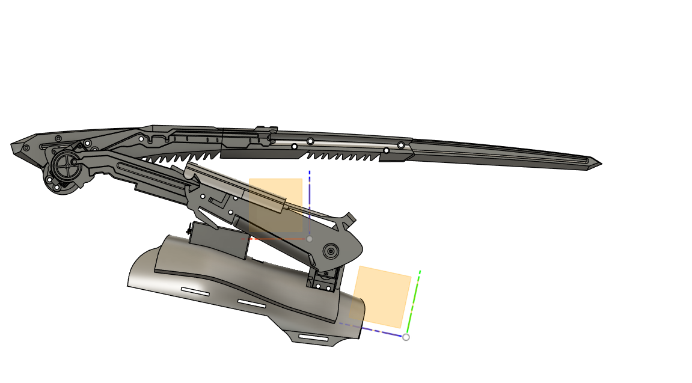

Mantis Blades


Supplies
- PLA/PETG filament
- 3D Printer
- 2x MG996R Servos
- Arduino Nano
- MPU-6050 IMU
- 6V 2400mAh Battery Pack
- 5V 2400mAh USB Battery
- Miscellaneous cables (For Recharging)
- Foam sheets (optional; for padding only)
- Solid core wire
- Soldering station
- Breadboard
- Velcro
- 3D Printer Access
Step 1

Print the Parts
Download the attached STL files and 3D print them on a 3D printer of your choice that is large enough (we recommend 256 cu mm). Use PLA or PETG filament for best results.
Step 2
Assembly Instructions
Begin by securely assembling all of the 3D-printed components using the pre-designed screw holes integrated into the CAD model. Ensure each part is properly aligned and tightened to maintain structural integrity.
Next, install two servo motors into their designated mounting locations on the 3D-printed structure. Use appropriate screws to firmly secure the servos in place.
Once the servos are mounted, proceed to connect their wires to the breadboard according to the corresponding circuit design. Ensure all connections are stable and correctly aligned with the control system.
Attach Velcro straps to the assembly, allowing the device to be comfortably fastened to the user's arm. For improved comfort and safety, especially where the mantis blade or other parts come into contact with the skin, line those areas with a soft cushioning material such as foam. For our project, we used styrofoam.
Step 3
Program the Arm
Download and install the Arduino IDE and import the attached code. Next, install the Adafruit MPU6050 library.
Then, save the code, plug in your Arduino Nano, and upload the code. Now you should be good to go!
Download main-code
Step 4
Electronics and Soldering Instructions
Start by connecting the battery to the breadboard, ensuring that the battery is fully charged before proceeding. Please note that the battery may require periodic replacements or charging, depending on usage and charge cycles, to maintain optimal performance.
Next, securely attach the IMU (Inertial Measurement Unit) to the breadboard. The IMU will be crucial for controlling the movement of the mantis blade, so proper connection are essential for accurate motion tracking.
Verify that the servos are securely connected to the breadboard. Ensuring the servos are properly mounted will allow for smooth integration with the control system.
Once the connections are established, place the battery into its designated holder, ensuring it is firmly seated. For ease of use, position the IMU in the palm of your hand, where it will interface with the system to control movement. Lastly, secure the breadboard into its designated holder to ensure stability and prevent accidental disconnections during operation.
Step 5
Wear and Use
Before using the Mantis Blade, make sure the full assembly is complete. Once everything is ready, take the arm brace and slide it onto your forearm. Ask someone to help you align it correctly if needed.Getting a secure and precise fit is important for both comfort and safety. After it's in place, pull the straps tightly to ensure the Mantis Blade is firmly attached and won’t move around during use.
Next, take the IMU (Inertial Measurement Unit) and hold it in the palm of your hand. At this point, do not power on the electronics. It’s extremely important to check your surroundings and make sure no one is standing nearby. The blade can activate suddenly, and anyone in close range could be hurt.
Once the brace is secure and the area around you is clear, go ahead and turn on the electronics. After that, you’re free to use the Mantis Blade as you like. But always handle it with care. Never use it recklessly or in a way that could injure someone.